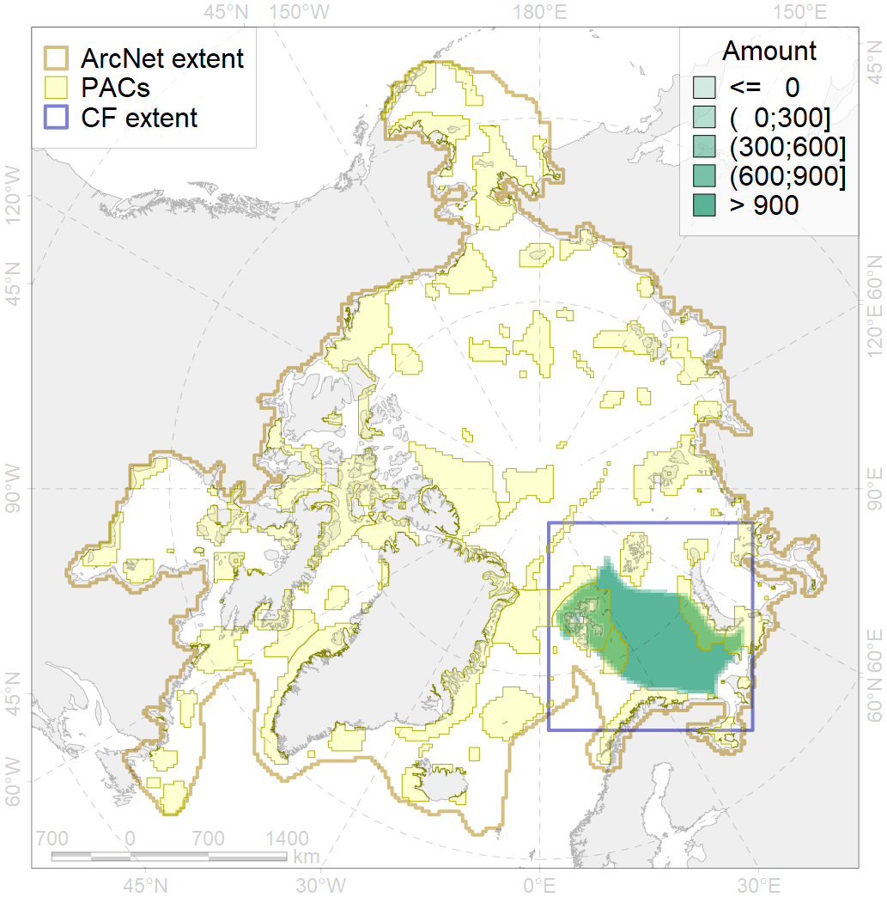
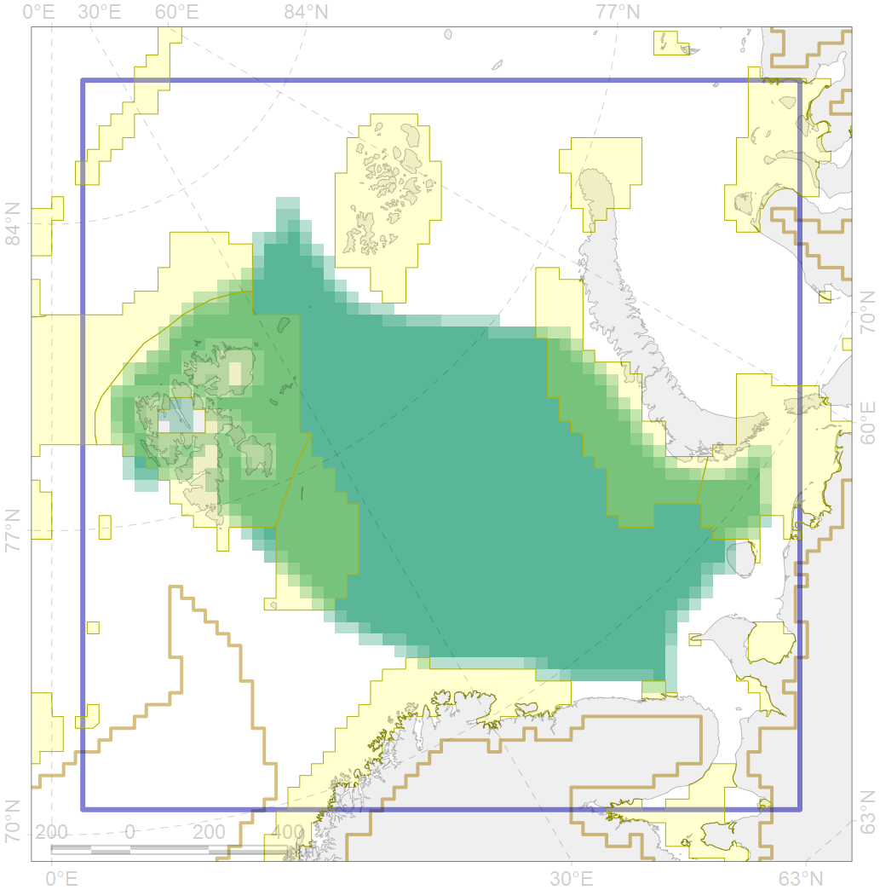

7040

| CF code | 7040 |
| CF name | North-eastern Barents Sea transitional zone |
| Time Period | 1900-2010 |
| Source(s) | Spiridonov et al., in prep. |
| Seasonality | 1-12 |
| Depth Horizon | Sea floor |
| Methodology | Boundaries derived from biogeographic regionalization scheme, which is in preparation for publication |
| Use Restrictions | Not for public use prior to publication (expected in early 2020) |
| Author Name | V. Spiridonov |
| Notes | |
| Scenario’s Target | 0 |
| Target Achievement | NaN (Scenario: Inf%) |
| PAC | Share of the Total Amount within the PAC | Share of the Target Achievement for the ArcNet | PAC’s Contribution to the Target Achievement |
|---|---|---|---|
| 20 | 2.6%2.7% | Inf% | 8.0%8.5% |
| 21 | 7.5%7.7% | Inf% | 20.8%21.2% |
| 25 | 0.0% | Inf% | 0.0% |
| 27 | 0.0%0.2% | Inf% | 0.0%0.1% |
| 29 | 0.2%0.6% | Inf% | 0.6%1.5% |
| 30 | 13.9%14.5% | Inf% | 43.4%45.2% |
| 31 | 5.8%6.3% | Inf% | 17.0%18.6% |
| inner | 30.1%32.0% | Inf% | 89.8%95.1% |
| outer | 69.9%69.9% | Inf% | 10.2%10.2% |
| † supplement values are for area consistence whereas principal values are for Accenter compatible gridded stats |